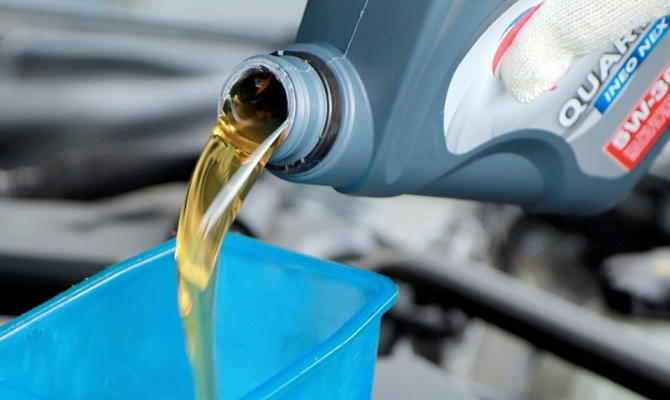
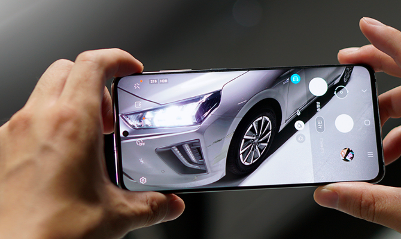

muffin 소개
- 자동차의 모든 것,차량관리 통합 플랫폼 머핀(muffin)!
-

T map과 머핀이 만나 프리미엄 차량관리 서비스를 제공합니다.
- 언제 어디서나,전문가의 출장 방문세차
-

내 차량에 딱 맞는 친환경 세차 상품과 최상의 세차 매니저가 차량을 찾아가 제공하는 출장세차를 예약해보세요.
- 나의 차량을 항상 최상의 상태로,엔진오일/배터리 교체
-

전문정비사의 정확한 정비, 시간에 구애 받지 않는 프리미엄
출장 정비 서비스 입니다.
- 사진 1장이면 OK!수리견적 서비스
-

내 차의 스크래치 사진을 올리면, 평균 5~6개 수리업체에서 견적을 받아 원하는 업체를 비교 후 선택할 수 있습니다.